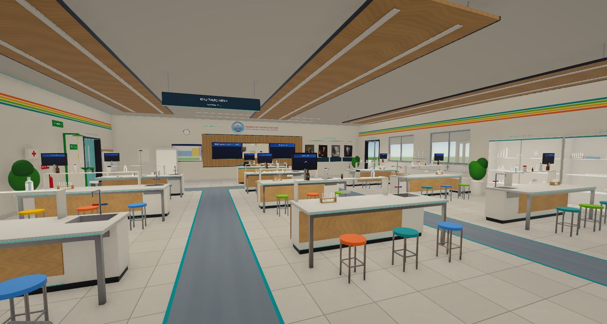
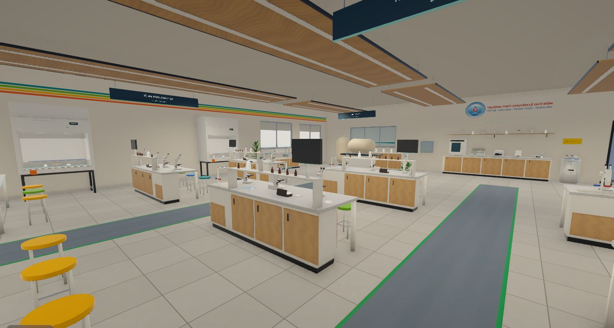
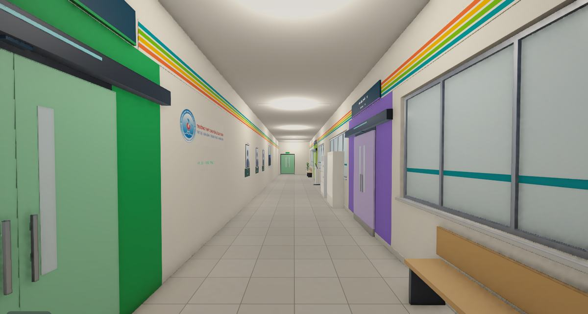
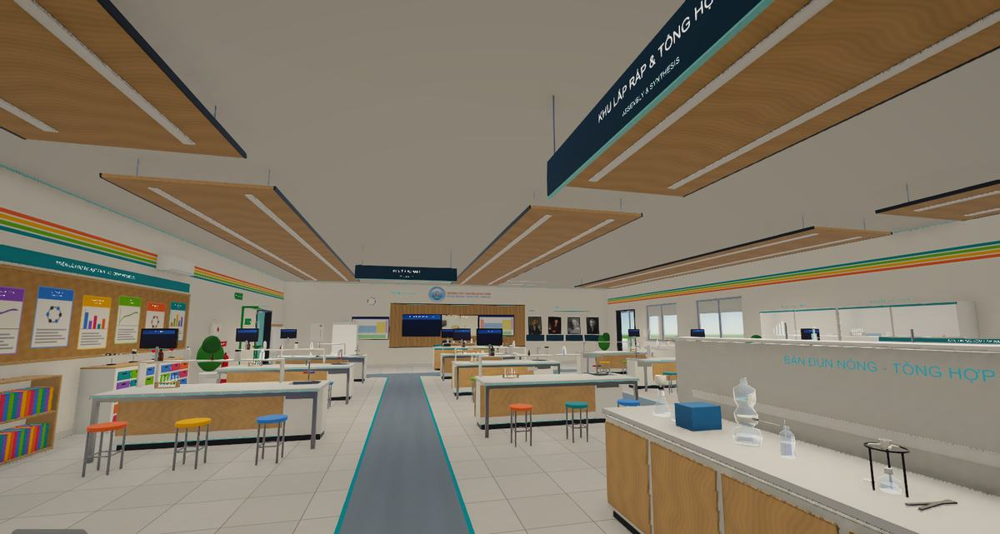
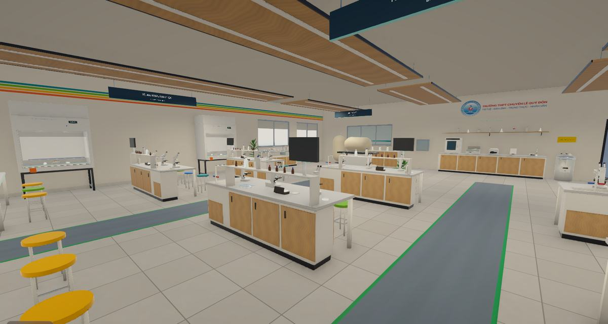

Tự tay làm thí nghiệm Hóa – Sinh, ngay trên máy tính thông dụng
VERA Lab là tòa nhà thí nghiệm ảo hai tầng tích hợp AI. Học sinh đi lại, cầm dụng cụ, pha hóa chất và vận hành máy phân tích; kết quả được tính từ chính những gì các em đã làm. Giáo viên điều khiển cả lớp từ trình duyệt.
VERA Lab · Mô hình tòa nhà dựng từ mặt bằng ứng dụng


Tầng 1 · Hóa học
Tầng 2 · Sinh học
Mô hình 3D dựng từ mặt bằng của ứng dụng. Kéo để xoay.
2tầng Hóa và Sinh
13khu chức năng
720hóa chất tra cứu được
14máy phân tích theo quy trình thật
108dụng cụ sinh học
16bài thí nghiệm Sinh
Xây dựng bằng
Unity 6
URP
C#
MediaPipe
Netcode · Unity Relay
Python
FastAPI
OpenCV
ESP32
BMI160
three.js
Cloudflare Pages
D1
Unity 6
URP
C#
MediaPipe
Netcode · Unity Relay
Python
FastAPI
OpenCV
ESP32
BMI160
three.js
Cloudflare Pages
D1
Sản phẩm
Mọi thứ của một phòng thí nghiệm, gói trong một ứng dụng
Từ bàn thí nghiệm, kho hóa chất đến phòng máy phân tích và nhà kính. Mỗi lần làm là một kết quả riêng, sai thì làm lại, không tốn hóa chất và không ai bị thương.
Hệ thống trải nghiệm phòng thí nghiệm thực tế ảo Hóa – Sinh tích hợp AI trong dạy học
Tác giả
Nguyễn Ngọc Bảo Trọng Trần Đức Trọng
Đơn vị
Trường THPT Chuyên Lê Quý Đôn, Gia Lai
Hình thức
Dự án Khoa học Kỹ thuật của học sinh trung học
Thực trạng
Học sinh cần được làm thí nghiệm. Nhiều trường chưa đủ điều kiện.
Thực hành là phần cốt lõi của môn Hóa và Sinh. Dưới đây là những gì báo chí và các nghiên cứu ở Việt Nam đã ghi nhận, từ tỉnh Gia Lai đến cả nước, kèm năm và phạm vi của từng con số.
“Hóa chất được cấp không sử dụng, để lâu hết hạn”
VietnamPlus, tường thuật kết luận thanh tra tại 8 trường có cấp THPT ở tỉnh Gia Lai, 01/10/2026.1
Thanh tra ở Gia Lai ghi nhận trường thiếu phòng bộ môn, hóa chất để đến hết hạn
Cuối tháng 9/2026, Thanh tra tỉnh Gia Lai công bố kết luận tại 8 trường có cấp THPT. Theo VietnamPlus, một số trường còn thiếu phòng học bộ môn và nhân viên thiết bị. Trong phần nói về thiết bị, vật tư dạy học, bài báo cũng nêu hóa chất được cấp nhưng không dùng, để lâu đến hết hạn.1
Trước đó, hai kết luận khác tại 45 trường trong tỉnh ghi nhận tình trạng thiếu phòng chức năng và thiết bị dạy học.2
Nhóm nhận định: có vật tư chưa chắc đã có giờ thực hành. Còn cần người chuẩn bị và điều kiện tổ chức.
Cả nước còn thiếu hàng nghìn phòng học bộ môn ở cấp THPT
Một bài tổng hợp trên Tạp chí Thiết bị Giáo dục nêu: để thực hiện Chương trình Giáo dục phổ thông 2018, cấp THPT còn thiếu 5.328 phòng học bộ môn, thiết bị dạy học tối thiểu mới đáp ứng 58,9% nhu cầu.3
Ở Hà Tĩnh, đoàn giám sát của Ủy ban MTTQ tỉnh ghi nhận phòng thí nghiệm thực hành còn thiếu so với quy định.4
Số liệu thuộc năm học 2022–2023. Nhóm chưa tìm được số liệu toàn quốc mới hơn, cũng chưa có số liệu riêng cho phòng Hóa và Sinh.
Giáo viên muốn cho làm thí nghiệm nhiều hơn, nhưng vướng nhiều việc
Trong khảo sát 285 giảng viên và giáo viên Hóa ở nhiều tỉnh thành, chỉ 27,7% thường xuyên dùng thí nghiệm khi dạy bài mới. Trở ngại lớn nhất là không có cán bộ chuyên trách phòng thí nghiệm và chế độ đãi ngộ cho công tác thực hành. Nhiều ý kiến nêu thêm: ít kinh phí mua hóa chất, một phòng thực hành cho nhiều lớp, mất nhiều thời gian chuẩn bị và dọn dẹp.5
Ở Hà Nội, một khảo sát về dạy thực hành ghi nhận 72% trường THPT chưa có phòng thí nghiệm riêng. 98% giáo viên cho rằng cần tăng thời gian cho học sinh làm thí nghiệm, còn học sinh mong muốn nhất là được quan sát và tự làm nhiều thí nghiệm hơn.6
Khảo sát 285 giáo viên thực hiện qua phiếu trực tuyến. Khảo sát ở Hà Nội chỉ thuộc một địa phương. Cả hai không đại diện cho toàn quốc.
Làm thật cần được chuẩn bị, vì một thao tác sai có thể gây tai nạn
Báo Sài Gòn Giải Phóng điểm lại 3 vụ tai nạn liên quan đến giờ thí nghiệm, tổng cộng 8 học sinh bị thương: nổ ống nghiệm ở Nghệ An (2/2019), bỏng cồn ở Cần Thơ (1/2018) và nổ trong phòng thí nghiệm hóa ở Hà Nội (1/2017). Bài báo dẫn ý kiến cho rằng nguyên nhân đến từ sự chủ quan và thiếu giám sát quy trình.7
Giáo viên trong khảo sát năm 2021 cũng cho biết kỹ năng thực hành của học sinh còn yếu, thao tác có khi thiếu an toàn.5
Nhóm nhận định: điều này không có nghĩa nên tránh thí nghiệm thật. Học sinh cần một nơi để tập trước, nơi làm sai không ai bị thương.
Các vụ việc diễn ra từ 2017 đến 2019. Nhóm chưa có thống kê chung về tai nạn thí nghiệm ở trường học.
Một số trường đã tự tìm đến mô phỏng để bù chỗ thiếu
Thiếu thiết bị, một trường THPT ở Hà Giang cho học sinh thực hành nhiều bài qua mô phỏng.8 Một trường THPT ở Thừa Thiên - Huế dùng thiết bị ảo, mô phỏng trên máy tính để bù chỗ thiếu.9 Ba trường THCS ở TP Lào Cai thống nhất mỗi trường hoàn thiện ít nhất 10 thí nghiệm ảo, đồng thời báo cáo một số học liệu số không tương thích với máy tính của trường và khó cài đặt.10
Về hiệu quả, một phân tích tổng hợp quốc tế ghi nhận phòng thí nghiệm ảo có mức tác động trung bình tới kết quả học tập (g = 0,587).11 Ở Việt Nam, một nghiên cứu với sinh viên ngành Hóa cho thấy nhóm xem thêm VR hiểu rõ hơn các bộ phận của máy phân tích.12
Nhóm nhận định: nghiên cứu của Đại học Huế vẫn xem thí nghiệm thật giữ vai trò chính.5 Vì vậy công cụ ảo nên đi cùng giờ thực hành thật, cho học sinh tự thao tác và chạy được trên máy sẵn có.
Có thể xây dựng một phòng thí nghiệm ảo Hóa – Sinh chạy trên máy tính thông dụng, trong đó kết quả được tính từ chính thao tác của học sinh, để các em tập trước và tập lại khi điều kiện thực hành ở trường còn hạn chế không?
Mục tiêu của nhóm
Cho học sinh thực hành an toàn, lặp lại không giới hạn, không tốn hóa chất.
Cho học sinh làm quen quy trình vận hành của máy phân tích hiện đại.
Có trợ lý AI và robot hướng dẫn đúng theo quy trình của từng thiết bị.
Điều khiển tự nhiên hơn chuột và bàn phím, bằng webcam và tay cầm tự chế giá rẻ.
VERA Lab đưa cả một tòa nhà thí nghiệm lên máy tính để học sinh làm đi làm lại đến khi thành thạo, còn giáo viên dẫn dắt cả lớp từ trình duyệt. Chọn một tính năng để xem chi tiết.

Đi lại tự do như ở trường thật
Nhìn bằng góc nhìn thứ nhất, đi qua cửa tự động, lên tầng bằng cầu thang hoặc thang máy. Cần nhanh thì dịch chuyển thẳng tới từng trạm. Ứng dụng chỉ tải phòng đang đứng và các phòng sát cửa, nên một tòa nhà lớn vẫn nhẹ máy.
2 tầng, 13 khu chức năng
Cửa tự động, thang máy
Dịch chuyển nhanh tới trạm
Tự tay làm thí nghiệm
Cầm dụng cụ, rót, pha, đun và quan sát hiện tượng. Ở lab Sinh, trong bình có gì do học sinh đưa vào, sinh phẩm là vật thật trong cảnh, kết quả tính theo thành phần, nhiệt độ và thời gian.
16 bài thí nghiệm Sinh
720 hóa chất tra cứu được
Chuẩn độ, kết tủa, khí, oxi hóa – khử
Bám chương trình GDPT 2018
Dùng thử thiết bị hiện đại
14 máy phân tích chạy theo quy trình vận hành chuẩn. Mỗi máy có màn hình vận hành riêng, chế độ Hướng dẫn và Thực hành. Máy đọc tín hiệu từ chính mẫu học sinh pha, nên mẫu pha sai sẽ ra kết quả sai.
UV-Vis
AAS
XRD
NMR
Sắc ký khí
Kính hiển vi điện tử
PCR
Tự lắp bộ dụng cụ của riêng mình
Chọn trong khoảng 40 loại bộ phận và ghép lại bằng khớp nối trên giao diện 3D. Bộ dụng cụ xuất hiện ngay trên bàn thí nghiệm bạn chọn và chạy đúng theo cách bạn đã nối.
Trợ lý AI và robot luôn bên cạnh
Hỏi cách dùng máy, nhờ robot đi lấy hóa chất, làm mẫu hoặc xử lý sự cố. Robot chỉ làm những bước đã qua bộ kiểm tra an toàn.

Thao tác bằng bàn tay, không cần kính VR
Đưa tay trước webcam: nắm tay để mở danh sách dụng cụ hoặc hóa chất trên bàn, ngón trỏ trượt để chọn, chụm hai ngón để lấy, xòe tay để đặt xuống. Nhận diện tay chạy ngay trong ứng dụng; chuột và bàn phím vẫn dùng bình thường.
Nắm ngang: dụng cụ
Nắm dọc: hóa chất
Trỏ: chọn
Chụm: lấy
Giơ ngón út: bật máy
Xòe: đặt xuống
Giáo viên điều khiển lớp học từ trình duyệt
Trình chiếu bài giảng lên màn hình lớn trong phòng lab, theo dõi trực tiếp từng học sinh, gửi thông báo, bấm “Tất cả chú ý”, bật chế độ Kiểm tra, khóa hóa chất nguy hiểm và ra lệnh cho robot. Cùng trang đó quản lý lớp, mã lớp, kết quả, kho hóa chất và phòng Sinh.
Trình chiếu
Theo dõi trực tiếp
Chế độ Kiểm tra
Khóa hóa chất
Chấm kết quả

Cùng vào một phòng thí nghiệm
Giáo viên mở phòng qua Internet bằng mã 6 ký tự hoặc trong mạng LAN, học sinh nhập mã để vào. Mọi người thấy nhau với tên riêng, cầm chung dụng cụ; máy mở phòng phân xử ai đang cầm vật nào.
Hiện mới đồng bộ vị trí và vật đang cầm. Dung dịch, phản ứng và máy phân tích chưa được đồng bộ giữa các máy.
Từ cửa phòng tới kết quả, trong bốn bước
Vào phòng
Đăng nhập hoặc dùng thử, đi bộ trong tòa nhà hoặc dịch chuyển nhanh tới trạm cần làm.
Chuẩn bị
Tìm hóa chất, lấy dụng cụ, hoặc nhờ robot mang tới bàn.
Thực hành
Tự tay thao tác bằng chuột hoặc bàn tay, hỏi trợ lý AI khi chưa rõ quy trình.
Xem kết quả
Kết quả tính theo đúng việc bạn đã làm. Sai thì làm lại, không mất gì.
Điểm mới và sáng tạo
1Mỗi lần làm là một kết quả riêng
Kết quả được tính từ đúng những gì bạn đã pha và thao tác, không phát lại video. Hai bạn làm khác nhau sẽ thấy kết quả khác nhau.
2Làm sai vẫn an toàn, và có hậu quả thật
Bỏ qua một bước trong quy trình thì thí nghiệm hỏng đúng như ngoài đời. Bài học nhớ lâu mà không ai gặp nguy hiểm.
3Tự do lắp ráp, không theo khuôn
Bạn tự chọn, tự nối, và bộ dụng cụ chạy đúng theo cách đã nối, kể cả khi nối sai.
4Robot AI có giới hạn an toàn
Robot nhận yêu cầu bằng lời và tự lập kế hoạch từng bước, nhưng mỗi bước phải qua bộ kiểm tra trước khi thực hiện.
5Nhập vai bằng thiết bị rẻ
Webcam thường đã đủ để thao tác bằng bàn tay, thêm tay cầm tự chế thay cho kính VR đắt tiền.
6Giáo viên điều khiển phòng lab ảo từ web
Bài giảng, thông báo, chế độ Kiểm tra và khóa hóa chất đi thẳng từ trình duyệt của giáo viên vào ứng dụng của học sinh.
Các điểm trên là đặc điểm của hệ thống. Nhóm chưa khảo sát đối chiếu có hệ thống với các phần mềm thí nghiệm ảo khác.
VERA Lab dành cho ai
Học sinh
Làm thí nghiệm trước và sau giờ học, luyện tới khi thành thạo, thử cả thao tác sai để hiểu vì sao phải làm đúng.
Giáo viên
Minh họa những thí nghiệm khó tổ chức trên lớp, trình chiếu và theo dõi cả lớp trong phòng lab ảo, chấm kết quả trên web.
Nhà trường
Bổ sung trải nghiệm về thiết bị và kỹ thuật chưa có điều kiện trang bị. VERA Lab đi cùng giờ thực hành thật, không thay thế.
Tham quan
Hai tầng, mỗi khu một vai trò
Chọn tầng, rồi bấm vào từng phòng trên mô hình 3D để xem nơi đó có gì. Mọi ảnh đều chụp trực tiếp trong ứng dụng.
Bấm vào phòng để xem, kéo để xoay
Lab Hóa học
Từ bàn thí nghiệm của học sinh, kho hóa chất đến phòng máy phân tích, khu chế tạo dụng cụ và khu robot.
720hóa chất
14máy phân tích
40loại bộ phận lắp ráp
Lab Sinh học
Sáu khu chức năng, từ quan sát tế bào dưới kính hiển vi đến tách chiết ADN, nuôi cấy vi sinh và nhà kính thực vật.
108dụng cụ
16bài thí nghiệm
6khu chức năng
Quan sát tế bào
Khí khổng
Co nguyên sinh
Lên men
Quang hợp
Tách chiết ADN
Nhuộm Gram
Cấy vi sinh
PCR và điện di
Ghép gen
Những thứ không phải trường nào cũng có
HóaKính hiển vi điện tửNhìn cấu trúc rất nhỏ của mẫu
SinhMáy PCR và điện diKhuếch đại và quan sát ADN
HóaMáy sắc ký khíTách chất trong hỗn hợp
SinhTrạm ghép genTìm hiểu kỹ thuật di truyền
HóaMáy nhiễu xạ tia XNhận biết chất rắn trong mẫu
SinhKính hiển vi quang họcQuan sát tế bào, khí khổng
HóaNồi hấp tiệt trùngLàm đúng quy trình mới đạt
AIRobot hình ngườiTrợ lý làm theo yêu cầu bằng lời
Công nghệ
Bên dưới hệ thống
Chọn một chủ đề để xem VERA Lab hoạt động thế nào, từ cách tính kết quả, trợ lý AI, nhận diện bàn tay đến tay cầm do nhóm tự thiết kế.
Sáu lớp công nghệ làm nên VERA Lab
Mỗi lớp đảm nhận một việc riêng, nên có thể sửa và kiểm thử từng phần.
Không gian 3D
Tòa nhà hai tầng dựng bằng code, chỉ tải phòng đang cần.
Unity 6, URP
Mô phỏng
Bộ máy tính kết quả từ thao tác của từng học sinh: pH, kết tủa, khí, oxi hóa – khử, màu, tín hiệu máy đo.
C#, có kiểm thử tự động
Trí tuệ nhân tạo
Trợ lý trả lời theo quy trình máy, robot lập kế hoạch có kiểm tra an toàn.
Python, FastAPI, nhiều nhà cung cấp AI
Điều khiển tự nhiên
Nhận diện bàn tay ngay trong ứng dụng, theo dõi đầu qua webcam, tay cầm không dây tự chế.
MediaPipe, OpenCV, ESP32
Nhiều người
Phòng học chung qua Internet bằng mã phòng hoặc trong mạng LAN.
Netcode for GameObjects, Unity Relay
Quản lý lớp học
Tài khoản, lớp, kết quả, trình chiếu, theo dõi trực tiếp, kho Hóa và phòng Sinh trên trình duyệt.
Cloudflare Pages Functions, D1
Kết quả được tính, không phát lại video
Mô hình ở mức phục vụ dạy học: đúng về hiện tượng và gần đúng về số liệu trong phạm vi các bài.
Học sinh thao tác
Rót, pha, đun, nối dụng cụ theo cách của mình, đúng hay sai đều được.
Hệ thống ghi thành phần
Mỗi bình lưu có chất gì, bao nhiêu, ở nhiệt độ nào, trong bao lâu.
Mô hình tính hiện tượng
Phản ứng, màu sắc, bay hơi được tính từ đúng lượng và thứ tự học sinh đã làm.
Máy đọc mẫu của học sinh
Máy phân tích tính tín hiệu từ chính mẫu trong ống, mẫu pha sai sẽ ra kết quả sai.
Làm sai thì sao?
Nồi hấp không đuổi khí
Đồng hồ vẫn báo đủ áp, nhưng nhiệt độ không đủ nên mẫu không được tiệt trùng.
Bỏ enzyme ADN ligaza
Không có khuẩn lạc trắng, đúng như khi ghép gen thất bại ngoài đời.
Tách ADN thiếu cồn lạnh
Thiếu xà phòng, muối hoặc cồn lạnh thì không thu được sợi ADN.
AI đề xuất, bộ kiểm tra quyết định
Robot không tự do hành động theo mọi câu trả lời của AI.
Nhận yêu cầu bằng lời
Học sinh hỏi cách dùng máy hoặc nhờ robot làm một việc.
Đưa bối cảnh vào câu hỏi
Máy chủ thêm cảnh hiện tại và quy trình của thiết bị.
AI lập kế hoạch
Kết quả là các bước thuộc những kỹ năng robot có sẵn.
Bộ kiểm tra duyệt từng bước
Bước sai hoặc mất an toàn bị loại trước khi robot thực hiện.
Trong lab Sinh chỉ dùng chủng dạy học cấp an toàn thấp nhất (BSL-1), AI từ chối yêu cầu vượt mức này. Ở chế độ Kiểm tra, giáo viên khóa được trợ lý AI của học sinh ngay trên máy chủ. Phần AI cần kết nối mạng tới máy chủ.
Webcam thường thay cho kính VR
Bàn tay trước webcam trở thành hai tay ảo trong phòng lab. Thao tác theo từng bàn thí nghiệm, nên không cần với chính xác tới từng vật.
Đọc hình từ webcam
Ứng dụng đọc hình ngay trên máy, không gửi lên mạng.
Tìm điểm trên bàn tay
MediaPipe chạy trong Unity tìm các điểm mốc của bàn tay, khoảng 17 ms mỗi khung trong bản thử nghiệm.
Nhận ra cử chỉ
Nắm, trỏ, chụm, giơ ngón út, xòe tay, mỗi cử chỉ một việc.
Điều khiển hai tay ảo
Mở danh sách, chọn, lấy, dùng và đặt vật trên bàn đang đứng.
Theo dõi đầu (F8) vẫn dùng chương trình Python với OpenCV và có thể bị Smart App Control của Windows 11 chặn. Độ chính xác nhận diện tay với webcam thật trong lúc chơi chưa được đo.
Đang tải mô hình 3D…
Phần cứng tự thiết kế · bản nháp
Tay cầm VERA Band 2
Tay cầm đeo bằng quai trên mu bàn tay, không cần nắm chặt, để thao tác trong lab tự nhiên hơn chuột và bàn phím. Tấm mu tay mang logo, chén quanh joystick hình lục giác cùng hình với logo, vân lục giác chống trượt ở vùng nắm.
78 × 78 × 128mm
≈ 144 gcó pin 9V, 54 g nhựa, ước tính
5tệp in 3D theo màu nhựa
Tháo rời
Thiết kế để in và tự lắp
Thân gồm hai nửa bắt vít M2, mặt ghép đặt xuống bàn khi in. Nắp khoang pin ở đáy có gai khóa, quai băng gai dính rộng 20 mm. Các chi tiết được gom theo màu nhựa: trắng, đen, xanh ngọc huỳnh quang và bạc.
Bên trong
Linh kiện phổ thông, dễ mua
ESP32 DevKitC truyền không dây, cảm biến chuyển động BMI160, joystick KY-023, cò bóp dùng cảm biến Hall SS49E và nam châm, pin vuông 9V, mạch hạ áp MP1584, công tắc trượt và nút bấm phụ.
Trạng thái
Bản nháp, đang chờ duyệt dáng
So với VERA Band: vùng nắm rộng từ 47 lên 53 mm, khuyên quai cách gốc ngón cái 4,68 mm thay vì 0,42 mm, đế thấp từ 17 xuống 12 mm, thêm bướu đỡ lòng bàn tay. Các số này đo trên mô hình 3D; nhóm chưa in, chưa cân và chưa thử trên tay thật.
Mạch ESP32 + BMI160 dùng cho tay cầm đã được đo riêng, chưa lắp vào vỏ: để yên 10 phút chỉ trôi 0,071°, so với 108,7° nếu không khử nhiễu.
Nhóm tách rõ ba việc: mô hình có tính đúng không, ứng dụng có chạy được trên máy thông dụng không, và học sinh có học tốt hơn không. Hai việc đầu đã đo, việc thứ ba chưa làm.
Đã đối chiếu
Mô hình tính đúng
Kết quả mô phỏng khớp đáp án và giá trị tham chiếu trong các bài đã đối chiếu.
Đã đo
Chạy trên laptop không có card rời
Đo bằng bản .exe trên laptop Intel Iris Xe, độ phân giải 1920 × 1080.
Chưa làm
Hiệu quả dạy học
Chưa khảo sát trên học sinh thật. Đây là việc đã có trong lộ trình của nhóm.
Kết quả mô phỏng so với giá trị đối chiếu
Số liệu lấy từ bài kiểm thử tự động. Bài kiểm thử thao tác đúng và cố ý thao tác sai, rồi đối chiếu kết quả.
Thí nghiệm
Kết quả mô phỏng
Giá trị đối chiếu
Nhiệt đốt cháy glucozơ
15570 J/g
15569 J/g (NIST)
Chuẩn độ giấm
0,8301 mol/L
0,8300 mol/L (đáp án)
Metanol trong rượu bằng GC-MS
1602 mg/L
1602 mg/L (đáp án)
Nung đá vôi ở 900 °C
còn 56,0 %
56,0 % (lý thuyết CaO)
Nồi hấp đúng quy trình
120,8 °C, giảm 8,5 bậc log
đạt tiệt trùng
Nồi hấp không đuổi khí
đồng hồ 1,05 bar nhưng chỉ 94 °C
không tiệt trùng
Các số này cho thấy mô hình tính đúng so với đáp án và giá trị tham chiếu, chưa phải đánh giá hiệu quả dạy học.
152bài kiểm thử Python đạt
147bài mô phỏng Hóa đạt
114bài mô phỏng Sinh đạt
36/36kiểm thử lớp học từ web
31/31kiểm thử phòng học chung
19/19kiểm thử thao tác tay
Phòng học chung được kiểm thử bằng ba tiến trình .exe thật, qua LAN và qua Relay thật. Lớp học từ web được kiểm thử với API thật, độ trễ từ lúc giáo viên bấm tới khi màn hình trong ứng dụng hiện xong là 0,3 đến 1,5 giây.
Hiệu năng trên laptop thông dụng
Sau đợt tối ưu đồ họa, thời gian mỗi khung hình giảm 28–35%, hình ảnh gần như giữ nguyên.
Máy nguội60,1 → 82,0 FPS
Máy đã nóng34,6 → 53,2 FPS
Bản trước khi tối ưuBản hiện tại
Đo bằng bản .exe trên laptop Intel Iris Xe, 1920 × 1080, tắt giới hạn 60 FPS để so sánh. Khi dùng thật, ứng dụng dừng ở 60 FPS.
Khử nhiễu và chống trôi cảm biến tay cầm
Cảm biến BMI160 không có la bàn, nên hướng quay quanh trục đứng chỉ là cộng dồn vận tốc góc: mọi sai số nhỏ của con quay đều dồn thành trôi. Nhóm đo trên mạch thật ESP32 + BMI160 (firmware v3.0, nối USB, 200 mẫu mỗi giây), để tay cầm nằm yên 15 phút, rồi chạy lại đúng chuỗi số đo đó qua nhiều thuật toán để so sánh công bằng.
Đo trên mạch thật · 11/11/2026
Trôi hướng sau 10 phút nằm yên
Thang logarit · vạch đứt là chỉ tiêu 1° / 10 phút
Cộng dồn thô, không bù
108,7°
Chỉ bù độ lệch 2 giây đầu
1,09°
Madgwick + bù sai số tĩnh
1,09°
Mahony Ki = 0,02 + bù sai số tĩnh
1,09°
Firmware cũ
0,047°
Firmware mới, hướng do mạch gửi về
0,071°
Lần đo 2: tay cầm bị chạm ở giây 73 làm lệch khoảng 1,7°; từ phút 2 đến phút 10, firmware mới chỉ trôi thêm 0,008°. Khi nằm yên, firmware cũ và mới đều đạt chỉ tiêu, vì cả hai cùng học lại độ lệch lúc tay cầm đứng yên.
0lần chạm ma ở hai nút cảm ứng, nhiễu 0,08% mức nền
12,6–15,2°/h bất ổn định độ lệch (Allan)
Khi cầm trên tay thì sao?
Cầm tay thì không lúc nào nằm yên hẳn, nên ưu điểm của firmware mới nằm ở đây. Phần này là mô phỏng 10 phút thao tác, dùng nhiễu con quay đo được ở trên, chưa đo bằng tay người thật.
Cấu hình
Có lúc đặt xuống bàn
Cầm liên tục
Madgwick + bù sai số tĩnh
39,8°
46,4°
Firmware cũ (học lại khi nằm yên)
7,8°
45,3°
Firmware mới
1,69° (giảm 96%)
4,44° (giảm 90%)
Mô phỏng giả định đã chạy hai bước hiệu chuẩn bù nhiệt và tỉ lệ con quay. Trên mạch đã đo, hai bước này chưa làm; nếu bỏ qua, kết quả firmware mới sẽ gần firmware cũ hơn.
Sáu kỹ thuật trong firmware
Bù sai số tĩnhCân 2 giây lúc bật để đo độ lệch con quay.
Học lại khi nằm yênĐặt trên bàn quá 0,5 giây thì học lại độ lệch, góc đứng hẳn.
Bù nhiệtĐộ lệch thay đổi theo nhiệt độ mạch, bù theo hệ số °/s mỗi °C.
Vùng chết mềmQuay chậm dưới 0,5 °/s bị bỏ, từ 0,5 đến 1 °/s giảm dần.
Hiệu chuẩn tỉ lệXoay 5 vòng để chỉnh tỉ lệ con quay trục đứng.
Lấy mẫu đều 200 HzThời gian mỗi mẫu đo bằng micro giây.
Đã thử và bỏ: Mahony có Ki và ZARU, vì cả hai học nhầm chuyển động của tay thành độ lệch.
Độ lệch Allan của con quay: dốc −½ là nhiễu trắng, đáy là bất ổn định độ lệch.
Chưa đo: nút cảm ứng khi chạm thật, kết nối Wi-Fi, hệ số nhiệt (nhiệt độ mạch chỉ đổi 0,01 °C trong buổi đo). Trục Y của joystick đang lỗi đấu nối, nên trong phòng thử 7 bài thao tác dùng chuỗi số đo thật, bản hiện tại đạt 18/23 chỉ số; khi sửa dây đạt 23/23.
Hạn chế đã biết
Những điểm dưới đây nhóm nêu rõ để người xem đánh giá đúng phạm vi của dự án.
Mô phỏng ở mức dạy học: đúng hiện tượng, gần đúng về số, không thay cho phần mềm nghiên cứu.
Chưa khảo sát hiệu quả dạy học. Lab Sinh tự do hiện được kiểm thử bằng bàn tay tự động, chưa có người thật chơi thử.
Phòng học chung mới đồng bộ vị trí và vật đang cầm, chưa đồng bộ dung dịch, phản ứng và máy phân tích.
Độ chính xác nhận diện tay với webcam thật trong lúc chơi chưa được đo. Theo dõi đầu bằng Python có thể bị Smart App Control chặn.
Máy PCR, điện di và ghép gen vẫn dùng luồng riêng, chưa nối với lab Sinh tự do.
Tay cầm VERA Band 2 còn là bản nháp: chưa in, chưa cân, chưa thử trên tay thật; độ vừa tay mới đo trên mô hình 3D. Mạch cảm biến đã đo khi nằm yên, nhưng trục Y joystick đang lỗi đấu nối; nút cảm ứng khi chạm và kết nối Wi-Fi chưa đo.
Trôi hướng khi cầm tay mới có số mô phỏng (dùng nhiễu đo thật), chưa đo bằng tay người.
Từng tầng, từng môn
Việc đã xong, việc đang làm và hướng phát triển tiếp theo.
Đã hoàn thành
Lab Hóa và lab Sinh
Tầng 1: phòng thí nghiệm, kho hóa chất, 14 máy phân tích, khu chế tạo, robot
Tầng 2: phòng sinh học, vi sinh, sinh học phân tử, kho sinh phẩm, nhà kính
Trợ lý AI và robot có bộ kiểm tra an toàn
Đã hoàn thành
Lớp học và nhiều người
Tài khoản, lớp, mã lớp, chấm kết quả trên web
Trình chiếu, theo dõi trực tiếp, chế độ Kiểm tra, khóa hóa chất
Phòng học chung qua Internet và LAN
Thao tác bằng bàn tay qua webcam
Firmware tay cầm chống trôi, đo trên mạch thật
Đang làm
Hoàn thiện
Đồng bộ dung dịch và phản ứng trong phòng học chung
Tay cầm VERA Band 2: duyệt dáng, in, lắp, nối vào ứng dụng
Mở rộng số phản ứng hóa học được mô phỏng
Dự kiến
Mở rộng và đánh giá
Khảo sát hiệu quả với học sinh tại trường
AI chạy ngay trên máy
Bản cài cho macOS, tầng mới cho môn Vật lý
Hỗ trợ kính thực tế ảo
Điều bạn có thể muốn biết
Bấm vào từng câu để xem trả lời.
VERA Lab có thay thế giờ thực hành thật không?
Không. VERA Lab giúp học sinh chuẩn bị và ôn lại, còn kỹ năng cầm nắm ngoài đời vẫn cần giờ thực hành thật.
Kết quả thí nghiệm có chính xác không?
Mô phỏng ở mức phục vụ dạy học: đúng về hiện tượng và gần đúng về số liệu trong phạm vi các bài. Nhóm chạy kiểm thử tự động để đối chiếu với đáp án.
Có cần kính thực tế ảo không?
Không. VERA Lab chạy trên màn hình máy tính thường, điều khiển bằng chuột và bàn phím. Webcam và tay cầm là tùy chọn.
Giáo viên quản lý lớp như thế nào?
Giáo viên đăng nhập trang quản lý trên trình duyệt để tạo lớp, cấp mã lớp, chấm kết quả, trình chiếu bài giảng lên màn hình trong phòng lab, theo dõi học sinh trực tiếp và bật chế độ Kiểm tra.
Nhiều học sinh có vào chung một phòng thí nghiệm được không?
Được. Phòng học chung nối qua Internet bằng mã 6 ký tự hoặc trong mạng LAN. Mọi người thấy nhau và cầm chung dụng cụ; dung dịch và phản ứng chưa được đồng bộ giữa các máy.
Có cần kết nối mạng không?
Phần trợ lý AI, robot lập kế hoạch và lớp học từ web cần kết nối tới máy chủ. Chế độ dùng thử không cần mạng.
Các thí nghiệm sinh học có an toàn không?
Trong ứng dụng chỉ dùng các chủng dạy học ở cấp an toàn thấp nhất (BSL-1), và trợ lý AI từ chối các yêu cầu vượt mức này.